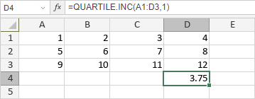

QUARTILE.INC funkcija
QUARTILE.INC funkcija je jedna od statističkih funkcija. Koristi se za vraćanje kvartila skupa podataka, bazirano na percentilnim vrednostima od 0..1, inkluzivno.
Sintaksa
QUARTILE.INC(array, quart)
QUARTILE.INC funkcija ima sledeće argumente:
| Argument | Opis |
|---|---|
| array | Izabrani opseg ćelija koje želite da analizirate. |
| quart | Vrednost kvartila koju želite da vratite, numerička vrednost. Moguće vrednosti su navedene u tabeli ispod. |
quart argument može biti jedna od sledećih vrednosti:
| Numerička vrednost | Kvartil |
|---|---|
| 0 | Najmanja vrednost u opsegu podataka |
| 1 | Prvi kvartil (25. percentil) |
| 2 | Drugi kvartil (50. percentil) |
| 3 | Treći kvartil (75. percentil) |
| 4 | Najveća vrednost u skupu podataka |
Napomene
Kako primeniti QUARTILE.INC funkciju.
Primeri
Slika ispod prikazuje rezultat koji vraća QUARTILE.INC funkcija.
